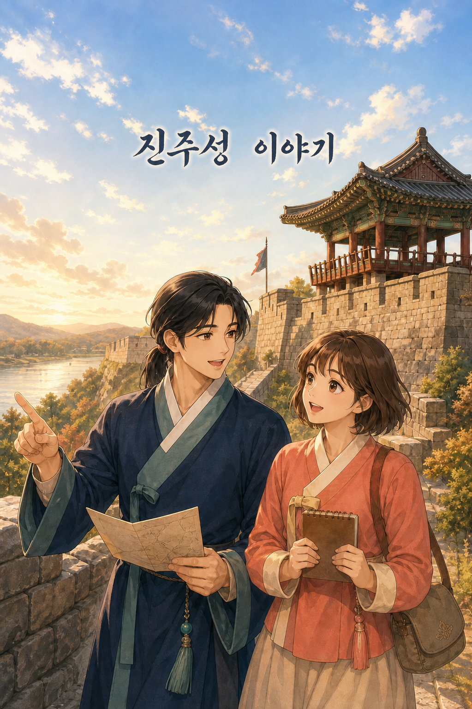
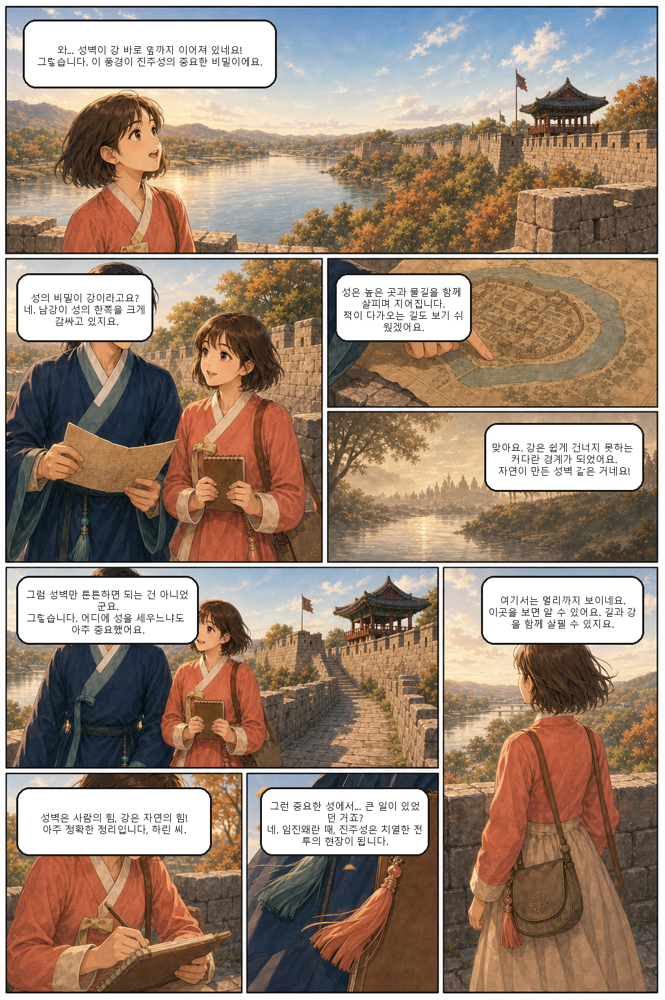
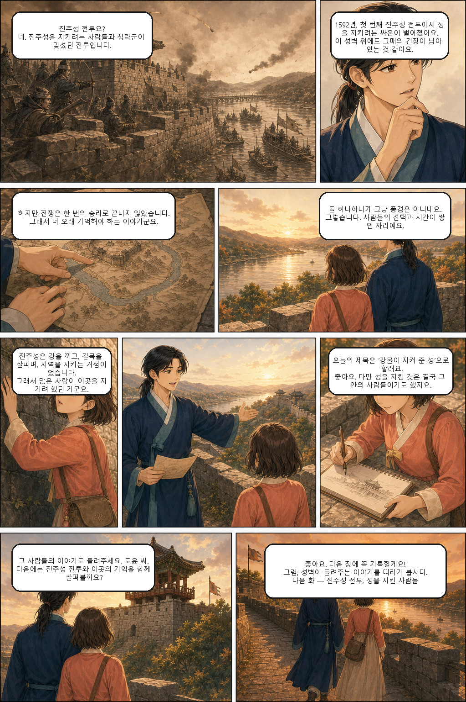

역사 · 교양
진주성 이야기
맑은 가을날 진주성을 찾은 도윤과 하린. 남강을 끼고 선 진주성이 왜 중요한 방어 거점이 되었는지, 성벽과 강물이 들려주는 이야기를 함께 살펴봅니다.
1화 보러가기 →JINJU WEBTOON · 2026
일상에 작은 파문을 남기는 웹툰을 소개합니다.
첫 번째 작품을 위한 공간을 차근차근 채워가세요.
FEATURED

역사 · 교양
맑은 가을날 진주성을 찾은 도윤과 하린. 남강을 끼고 선 진주성이 왜 중요한 방어 거점이 되었는지, 성벽과 강물이 들려주는 이야기를 함께 살펴봅니다.
1화 보러가기 →EPISODE 01
남강과 성벽이 만든 진주성의 방어를 따라가 보세요.


NEW STORIES
로맨스
일상
미스터리
ABOUT JINJU
진주 웹툰은 창작물과 독자를 연결하는 개인 웹툰 공간입니다.